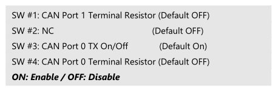
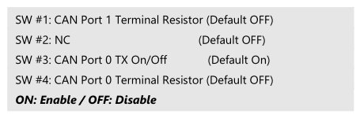

How to use CAN bus¶
The tutorial will guide you how to use CAN bus module.
Supported Model: ROScube-I series
Installation¶
Install CAN bus module into ROScube.
Check if the Faro module exists
ls /dev/ttyUSB*
Install
can-utils
sudo apt-get install can-utils
Decompress FARO CAN driver.
tar zxvf SocketCAN_V1.0.9.tgz
Build
faro_can.ko
cd SocketCAN/V1.0.9/socketCAN/faro-socketcan/
make
Build
farocand
cd SocketCAN/V1.0.9/socketCAN/faro-can-utils/
make
Check version of
faro_can.ko
cd SocketCAN/V1.0.9/socketCAN/faro-socketcan/
modinfo ./faro_can.ko
Load module
sudo modprobe can
sudo modprobe can_raw
cd SocketCAN/V1.0.9/socketCAN/
sudo insmod ./faro-socketcan/faro_can.ko
sudo ./faro-can-utils/farocand -s22 -S921600 /dev/ttyUSB0 faro_can0 faro_can1
sudo ifconfig faro_can1 up
sudo ifconfig faro_can0 up
Hardware preparation¶
Connect Pin43 with Pin44, and Pin10 with Pin11. In that way, the CAN_PORT0 and CAN_PORT1 are connected.


Turn on the Terminal Resistor on Port 1 or Port 2.
 

{kind=link}
In the picture below, we turned on the Terminal Resistor of Port 0.

Test¶
Open terminal 1, enter below command to wait data from faro_can0:
candump faro_can0 -t A
Open terminal 2, enter below command to send data to faro_can1:
cansend faro_can1 123#1122334455667788
The test result should be similar to below picture: